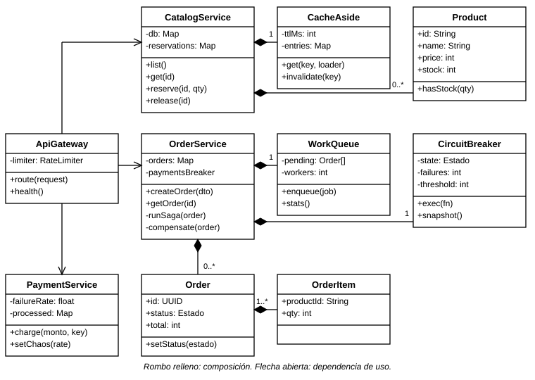
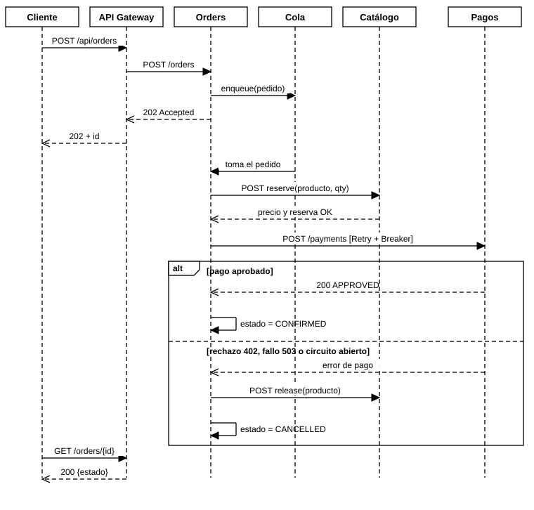
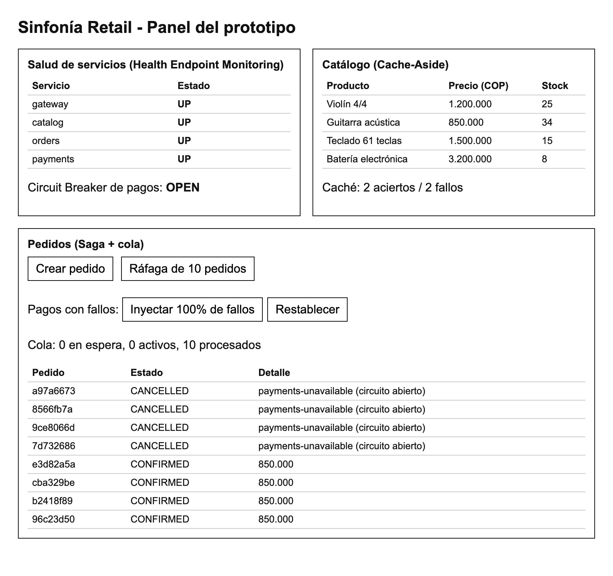

Figura 1
Diagrama de casos de uso de Sinfonía Retail

Arquitectura de microservicios en la nube para Sinfonía Retail: diseño UML, patrones de diseño y prototipo
David Amaya
Tecnológica del Oriente, Institución de Educación Superior
Ingeniería de Software
Arquitectura de Software
Unidad 1, Actividad 2: Orquestando códigos: La sinfonía de los sistemas
Leydi Johana Polo Amador
28 de octubre de 2026
El comercio electrónico concentra su demanda en campañas de corta duración durante las cuales una plataforma monolítica debe absorber varias veces su tráfico habitual y, al mismo tiempo, depender de terceros, como las pasarelas de pago, que pueden fallar. Sinfonía Retail S.A.S., una tienda en línea de instrumentos musicales, enfrenta este escenario: su sistema heredado se detiene por completo cuando el cobro se demora, vende existencias que ya no tiene y obliga a desplegar toda la aplicación ante cualquier cambio. Este informe documenta la arquitectura propuesta para reemplazarlo, diseñada con base en los principios de modularidad y escalabilidad de la arquitectura de software (Bass et al., 2021; Richards y Ford, 2020).
El trabajo sigue los pasos solicitados en la actividad (Tecnológica del Oriente, s. f.): análisis de requisitos, modelado con el Lenguaje Unificado de Modelado (UML), selección de patrones de diseño para la nube e implementación de un prototipo ejecutable. El código fuente está disponible en https://github.com/[usuario]/sinfonia-retail y la presentación en video, en https://youtu.be/[enlace]. Al final se valoran los resultados y las limitaciones de la propuesta.
Sinfonía Retail S.A.S. vende instrumentos musicales a través de su sitio web. La plataforma actual es un monolito que gestiona catálogo, pedidos y pagos en un mismo proceso y una misma base de datos. Los responsables del negocio reportaron cuatro problemas: (a) en campañas como el Día de la Música las visitas se multiplican y el sitio se degrada; (b) cuando la pasarela de pagos responde con lentitud, los recursos del sistema quedan ocupados y todo el sitio deja de responder; (c) pedidos simultáneos reservan la misma existencia y producen sobreventa; y (d) cada corrección exige desplegar la aplicación completa. La empresa busca una arquitectura modular que escale por partes, tolere las fallas de terceros y se despliegue en la nube.
Los requisitos funcionales se redactaron como historias de usuario a partir de los cuatro problemas anteriores y se agruparon por actor. Los requisitos no funcionales se expresaron como escenarios de calidad con una métrica verificable (Bass et al., 2021) y se clasificaron según el modelo de calidad ISO/IEC 25010 (International Organization for Standardization [ISO], 2011).
La Tabla 1 resume los ocho requisitos funcionales. Los tres primeros describen el recorrido del cliente; RF-03 a RF-06 corresponden a reglas que el sistema aplica por sí mismo para evitar la sobreventa y las cobranzas fallidas, y RF-07 y RF-08 atienden la operación.
Tabla 1
Requisitos funcionales
| ID | Requisito | Actor | Prioridad |
|---|---|---|---|
| RF-01 | Consultar el catálogo con precio y existencias | Cliente | Alta |
| RF-02 | Crear un pedido con uno o más ítems | Cliente | Alta |
| RF-03 | Reservar el inventario de cada ítem sin permitir sobreventa | Sistema | Alta |
| RF-04 | Procesar el pago del pedido con una pasarela externa | Sistema | Alta |
| RF-05 | Consultar el estado del pedido (PENDING, PROCESSING, CONFIRMED o CANCELLED) | Cliente | Alta |
| RF-06 | Cancelar el pedido y liberar el inventario cuando el pago falle o sea rechazado | Sistema | Alta |
| RF-07 | Exponer el estado de salud y las métricas operativas | Administrador | Media |
| RF-08 | Simular fallos de la pasarela de pagos para probar la resiliencia | Administrador | Media |
Nota. Elaboración propia a partir del contexto del caso.
La Tabla 2 expresa cada atributo de calidad como un escenario medible y lo vincula con el mecanismo arquitectónico que lo satisface. Esta vinculación guía la selección de patrones de la sección correspondiente.
Tabla 2
Requisitos no funcionales como escenarios de calidad
| ID | Atributo (ISO, 2011) | Escenario medible | Mecanismo |
|---|---|---|---|
| RNF-01 | Eficiencia de desempeño | Ante lecturas repetidas del catálogo, la respuesta tarda menos de 10 ms (la lectura sin caché cuesta unos 100 ms) | Cache-Aside |
| RNF-02 | Escalabilidad | En una ráfaga de 40 pedidos, la mediana de aceptación es inferior a 100 ms sin esperar el cobro | Cola de trabajo |
| RNF-03 | Fiabilidad (tolerancia a fallos) | Si pagos falla, el rechazo ocurre en menos de 50 ms una vez abierto el circuito, y el sistema se recupera 5 s después de restablecido el servicio | Circuit Breaker y Retry |
| RNF-04 | Fiabilidad (consistencia) | Ningún pedido cancelado deja inventario reservado, aun con reintentos | Saga e idempotencia |
| RNF-05 | Mantenibilidad | Cada servicio se modifica y despliega sin tocar a los demás | Servicios y API Gateway |
| RNF-06 | Portabilidad | El sistema se ejecuta en cualquier plataforma de contenedores configurando solo variables de entorno | Imagen única |
| RNF-07 | Operabilidad | El estado de cada servicio y las métricas se consultan en menos de 1 s | Health Endpoint Monitoring |
| RNF-08 | Seguridad | Un cliente no puede saturar el sistema con ráfagas ilimitadas de solicitudes | Límite de tasa |
Nota. Los umbrales se fijaron como criterios de aceptación del prototipo y se verifican en la Tabla 4.
El prototipo se limita a Node.js 22 sin dependencias externas para que cualquier revisor pueda ejecutarlo. Los datos residen en memoria, la pasarela de pagos es un simulador y la autenticación de usuarios queda fuera del alcance. Estas restricciones no alteran la arquitectura: cada una corresponde a un componente sustituible, como se muestra en el diagrama de despliegue.
La arquitectura adopta un estilo de microservicios (Newman, 2021) con cuatro componentes: un API Gateway como punto único de entrada y los servicios de catálogo, pedidos y pagos, cada uno con una responsabilidad y un estado propios. Los diagramas siguen la notación UML 2.5.1 (Object Management Group [OMG], 2017) y se generan con un guion reproducible incluido en el repositorio.
La Figura 1 delimita el alcance del sistema desde la perspectiva de sus actores. El cliente consulta el catálogo, crea pedidos y revisa su estado; el administrador monitorea el sistema e inyecta fallos para probar la resiliencia, y la pasarela de pagos es un actor externo. «Crear pedido» incluye la reserva de inventario y el procesamiento del pago, y se extiende con la cancelación compensatoria cuando alguno de ellos falla. El diagrama es relevante porque traza cada requisito funcional hacia una capacidad del sistema y fija los límites de los servicios.
Figura 1
Diagrama de casos de uso de Sinfonía Retail
La Figura 2 presenta el modelo estático. ApiGateway depende de los tres servicios y no contiene lógica de negocio. OrderService compone una WorkQueue y un CircuitBreaker, y administra pedidos (Order) formados por uno o más ítems (OrderItem); CatalogService compone un CacheAside y administra objetos Product. Las clases que implementan patrones son independientes de los servicios, de modo que se reutilizan y se prueban de forma aislada, lo que favorece la mantenibilidad (RNF-05).
Figura 2
Diagrama de clases de los servicios y los patrones

La Figura 3 describe el flujo principal de creación de un pedido. El Gateway recibe la solicitud, Orders la encola y responde de inmediato con 202 Accepted, de modo que el cliente no espera el cobro. Un trabajador toma el pedido, reserva el inventario en Catálogo y solicita el pago, protegido por reintentos y un interruptor de circuito. En el fragmento alternativo, un pago aprobado confirma el pedido; un rechazo, un fallo o un circuito abierto ejecutan la compensación que libera el inventario y cancelan el pedido. El cliente consulta el resultado mediante la ruta de estado. El diagrama justifica la naturaleza asíncrona del diseño y muestra dónde actúa cada patrón.
Figura 3
Diagrama de secuencia de la creación de un pedido

La Figura 4 muestra cómo se distribuyen los artefactos. El navegador accede por HTTPS al contenedor gateway, que se comunica por HTTP con los contenedores catalog, orders y payments. Los cuatro se construyen con una misma imagen de Node.js 22 y se diferencian por una variable de entorno (SERVICE), por lo que pueden desplegarse en una plataforma de contenedores gestionada, como Google Cloud Run, o ejecutarse juntos en un solo contenedor. Los nodos discontinuos indican la evolución prevista (caché gestionada, broker de mensajes y pasarela real) y no forman parte del prototipo.
Figura 4
Diagrama de despliegue en una plataforma de contenedores

Se partió del catálogo de patrones de computación en la nube de Microsoft (s. f.) y de la bibliografía sobre microservicios (Newman, 2021; Richardson, 2019), y se adoptaron únicamente los patrones que responden de forma directa a un requisito no funcional, como lo recomienda el enfoque de patrones de diseño (Gamma et al., 1994): cada patrón debe resolver un problema concreto. La Tabla 3 resume la selección.
Tabla 3
Patrones seleccionados, problema que resuelven y aplicación en el prototipo
| Patrón | Problema | Aplicación en el prototipo | Requisito |
|---|---|---|---|
| API Gateway (Richardson, 2019) | Los clientes no deben conocer la ubicación ni el número de servicios | Servicio gateway: enrutamiento, salud agregada y panel web | RNF-05, RNF-07 |
| Cache-Aside (Microsoft, s. f.) | Las lecturas repetidas sobrecargan la fuente de datos | CacheAside con TTL de 5 s en el catálogo; se invalida al reservar o liberar | RNF-01 |
| Queue-Based Load Leveling (Microsoft, s. f.) | Las ráfagas saturan el procesamiento sincrónico | WorkQueue con dos trabajadores; POST /orders responde 202 | RNF-02 |
| Saga orquestada (Garcia-Molina y Salem, 1987; Richardson, 2019) | No existe una transacción distribuida entre catálogo y pagos | runSaga reserva, cobra y, si falla, compensa liberando el inventario | RNF-04 |
| Circuit Breaker (Fowler, 2014; Nygard, 2018) | Una dependencia caída agota recursos y propaga el fallo | Interruptor alrededor del cobro: se abre tras 3 fallos y espera 5 s | RNF-03 |
| Retry (Microsoft, s. f.) | Los fallos transitorios no deben cancelar pedidos | retry() con retroceso exponencial y jitter, solo para errores 5xx y de red | RNF-03 |
| Idempotent Receiver (Hohpe y Woolf, 2003) | Un reintento no debe cobrar ni reservar dos veces | Cabecera Idempotency-Key en pagos y reservas por identificador de pedido | RNF-04 |
| Health Endpoint Monitoring (Microsoft, s. f.) | El operador debe saber qué componente falló | /health en cada servicio y agregación en /api/health | RNF-07 |
| Rate Limiting (Microsoft, s. f.) | Un cliente puede saturar el sistema | Token bucket por IP en el gateway (60 fichas, 30 por segundo) | RNF-08 |
Nota. Elaboración propia. TTL = tiempo de vida de una entrada de caché.
Se eligió una saga orquestada en lugar de una coreografiada porque el pedido atraviesa solo dos servicios y el flujo tiene un orden claro; un orquestador central concentra la lógica, facilita seguir el estado de cada pedido y evita dependencias cíclicas entre servicios (Richardson, 2019). La coreografía se reservaría para flujos con más participantes.
Retry y Circuit Breaker se combinan porque cubren fallos distintos: el reintento absorbe los transitorios y el interruptor evita que, cuando el fallo es persistente, cada pedido consuma todos sus reintentos. En el prototipo el reintento envuelve al interruptor para que cada intento cuente como fallo y, una vez abierto el circuito, los reintentos se detengan de inmediato; sin esta combinación, cada pedido cancelado ocuparía a un trabajador durante todo el tiempo de espera (Nygard, 2018). La cola, por su parte, desacopla la tasa de llegada de la de procesamiento: el cliente recibe respuesta en milisegundos y el pico se consume al ritmo que soporta el servicio de pagos.
Se descartaron tres alternativas. Un monolito modular resuelve la mantenibilidad, pero no el escalado independiente ni el aislamiento de fallos. El commit en dos fases se descartó porque bloquea recursos y exige que todos los participantes lo soporten, algo que las pasarelas de pago externas no ofrecen. Compartir una base de datos entre servicios se descartó porque reintroduce el acoplamiento que se busca eliminar (Newman, 2021).
El prototipo usa Node.js 22 con módulos ES y sin dependencias. Contiene los cuatro servicios en src/services, las implementaciones de los patrones en src/shared, un panel web en public, un Dockerfile y un archivo docker-compose.yml. Cada patrón es una clase o función pequeña con pruebas propias, lo que permite verificar su comportamiento sin levantar la red. El repositorio https://github.com/[usuario]/sinfonia-retail incluye un README con las instrucciones de ejecución y un historial de commits organizado por funcionalidad.
La Figura 5 muestra el panel durante una prueba de caída del servicio de pagos: el circuito está abierto, los pedidos nuevos se cancelan con la razón «circuito abierto» y el inventario del violín permanece en 25 unidades, lo que confirma la compensación. La Tabla 4 resume la medición de cada escenario de calidad con el guion scripts/bench.mjs.
Figura 5
Panel del prototipo con el circuito de pagos abierto

Nota. Captura del prototipo en ejecución local.
Tabla 4
Resultados de las mediciones frente a los umbrales definidos
| Escenario | Umbral | Resultado medido | Cumple |
|---|---|---|---|
| Lectura del catálogo (RNF-01) | Menos de 10 ms con caché | 118,6 ms sin caché; mediana de 0,7 ms con caché (n = 30) | Sí |
| Ráfaga de 40 pedidos (RNF-02) | Mediana de aceptación inferior a 100 ms | Mediana de 26,8 ms; los 40 aceptados en 42 ms; procesamiento completo en 1,74 s | Sí |
| Caída de pagos (RNF-03) | Rechazo en menos de 50 ms con el circuito abierto | Primer pedido en 481 ms (con reintentos); los siguientes, cerca de 20 ms | Sí |
| Recuperación (RNF-03) | Recuperación 5 s después de restablecido el servicio | Pedido CONFIRMED a los 5,2 s; circuito CLOSED | Sí |
| Consistencia (RNF-04) | Sin inventario reservado por pedidos cancelados | Violín: 24 de 25 unidades (un pedido confirmado; los cancelados liberaron su reserva) | Sí |
Nota. Una ejecución representativa en un equipo local, con 100 ms de latencia simulada en la base de datos; los valores varían entre ejecuciones.
Se escribieron 12 pruebas con el ejecutor nativo de Node.js: cinco unitarias de los patrones y siete de integración del sistema completo. Estas últimas cubren la saga exitosa, la compensación por falta de inventario, el rechazo de un pago, la apertura y la recuperación del interruptor, el acierto de caché y la validación de entradas. Todas pasan con el comando npm test.
La imagen de contenedor es única y se configura con variables de entorno. Con SERVICE=all escucha en el puerto indicado por PORT, lo que la hace compatible con servicios gestionados como Google Cloud Run (el comando está en el README), y con docker compose up se levantan los cuatro contenedores por separado. El prototipo se verificó en ejecución local; el despliegue en un proveedor concreto sigue los pasos del README.
La arquitectura propuesta responde a los cuatro problemas de Sinfonía Retail con patrones concretos y verificables: la separación por servicios y el API Gateway aportan modularidad; la cola y el Cache-Aside, escalabilidad y rendimiento; y la combinación de Retry, Circuit Breaker y saga con compensación, tolerancia a fallas sin pérdida de consistencia. Las mediciones del prototipo cumplieron los umbrales fijados para los escenarios de calidad (Tabla 4) y el modelado UML permitió trazar cada requisito hasta un componente.
El prototipo tiene límites: guarda los datos en memoria, su cola es local al proceso (un reinicio pierde los pedidos pendientes), la pasarela es simulada y no hay autenticación. En producción corresponde sustituir la cola por un broker de mensajes, el estado por una base de datos gestionada por servicio y la caché por un servicio compartido, además de añadir autenticación en el Gateway y trazabilidad distribuida. Como trabajo futuro se recomienda medir el sistema bajo carga sostenida en la nube para validar las mismas métricas fuera del entorno local.
Bass, L., Clements, P. y Kazman, R. (2021). Software architecture in practice (4.ª ed.). Addison-Wesley.
Fowler, M. (2014, 6 de marzo). CircuitBreaker. martinfowler.com. https://martinfowler.com/bliki/CircuitBreaker.html
Gamma, E., Helm, R., Johnson, R. y Vlissides, J. (1994). Design patterns: Elements of reusable object-oriented software. Addison-Wesley.
Garcia-Molina, H. y Salem, K. (1987). Sagas. ACM SIGMOD Record, 16(3), 249-259. https://doi.org/10.1145/38713.38742
Hohpe, G. y Woolf, B. (2003). Enterprise integration patterns: Designing, building, and deploying messaging solutions. Addison-Wesley.
International Organization for Standardization. (2011). Systems and software engineering — Systems and software Quality Requirements and Evaluation (SQuaRE) — System and software quality models (ISO/IEC 25010:2011). https://www.iso.org/standard/35733.html
Microsoft. (s. f.). Cloud design patterns. Microsoft Learn. https://learn.microsoft.com/en-us/azure/architecture/patterns/
Newman, S. (2021). Building microservices: Designing fine-grained systems (2.ª ed.). O'Reilly Media.
Nygard, M. T. (2018). Release it! Design and deploy production-ready software (2.ª ed.). Pragmatic Bookshelf.
Object Management Group. (2017). OMG Unified Modeling Language (OMG UML) (Versión 2.5.1; formal/17-12-05). https://www.omg.org/spec/UML/2.5.1
Richards, M. y Ford, N. (2020). Fundamentals of software architecture: An engineering approach. O'Reilly Media.
Richardson, C. (2019). Microservices patterns: With examples in Java. Manning Publications.
Tecnológica del Oriente. (s. f.). Guía de aprendizaje: Arquitectura de software [Documento del curso]. Institución de Educación Superior.